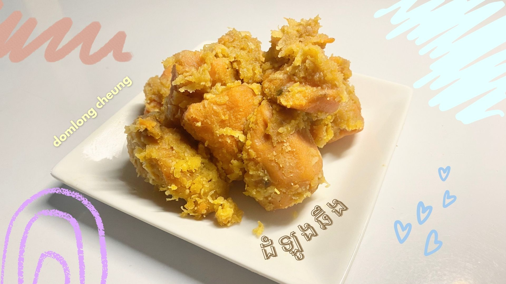
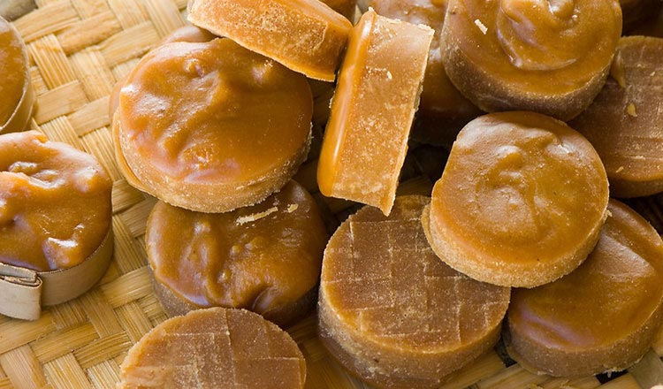

Domlong Cheung.
Domlong Cheung is a famous Cambodian snack/appetizer to enjoy with your friends and family. It is Cambodian-style caramelized potatoes with shredded coconut on top. It captures the hearts of millions of people with its rich, sugary taste and its creamy texture.
Ingredients.
- 1kg of peeled sweet potatoes
- 3/4 cup or 150g brown sugar or palm sugar
- 1tsp salt
- 7oz or 200ml coconut milk
- Some extra coconut milk (add more in case of sugar syrup become less and sweet potatoes aren't cooked well yet)
- Shredded coconuts
- 8 cups or 200ml of water
- 1tbsp of red limestone water

palm sugar

coconut milk
Instructions.
- First, clean the sweet potatoes thoroughly and peel them. Chop it into medium-sized pieces.
- Put 8 cups of water into a bowl and add in 1tbsp of limestone water. Stir it till it dissolves.
- Put the sweet potato into the mixture and soak it for 30 minutes.
- Afterwards, add 7oz or 200ml of coconut milk in a pan and stir it until it's fully boiled. (bubbles popping up)
- Add in 3/4 cup of brown sugar and mix it well until it's completely dissolved.
- Add in 1tbsp of salt and stir it thoroughly. Remember to adjust the heat to medium-low.
- Stir it continuously until the sugar completely thickens and the potatoes turn to a golden brown.
- After the sugar fully thickens into a creamy consistency, put the shredded coconut in. Then, combine the caramelized sweet potatoes together with the shredded coconut.
- Now, your Domlong Cheung is ready to be served!
Reference.
- “How to make Caramelized Sweet Potatoes.” YouTube, Somar’s Cooking, 28 Dec 2020, https://www.youtube.com/watch?v=Is_CAtI_Qgo.
- Palm Sugar (image link)
- Coconut Milk (image link)
{kind=link}
{kind=link}